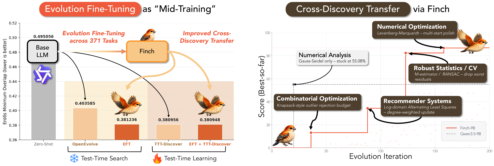
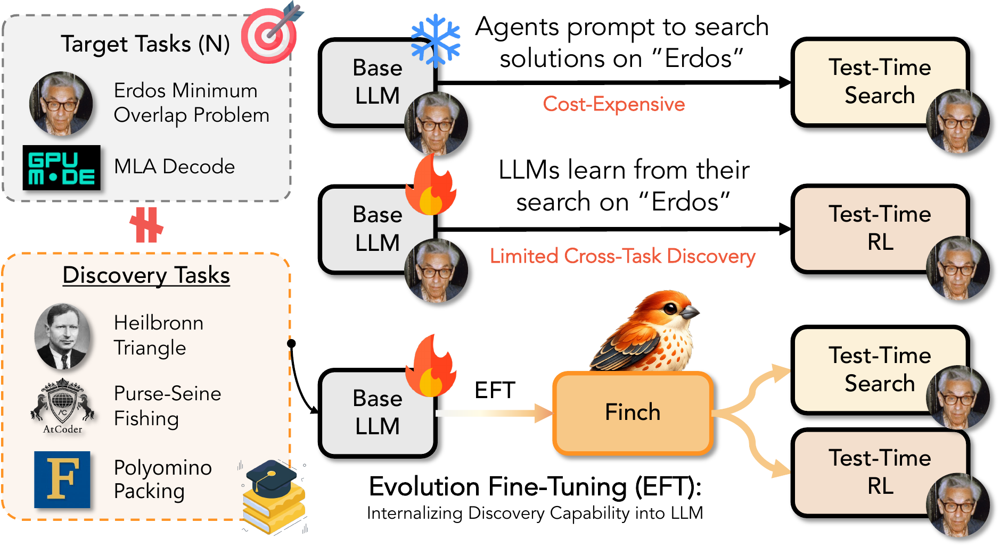
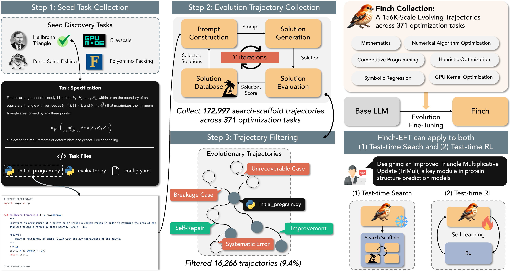
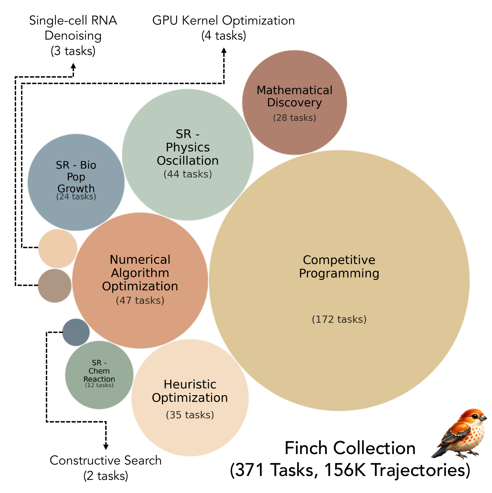
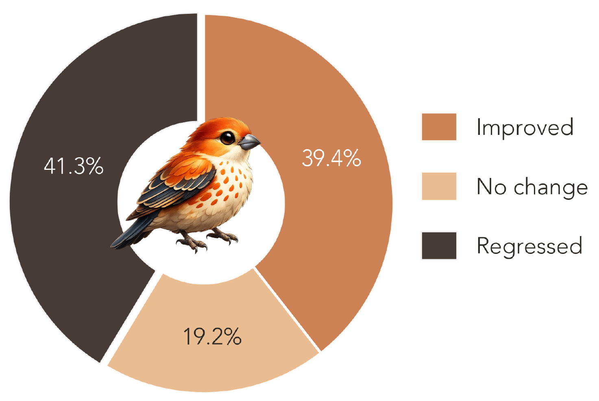
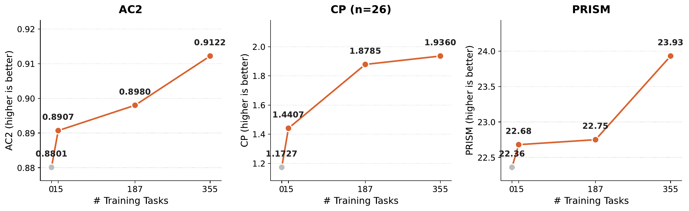
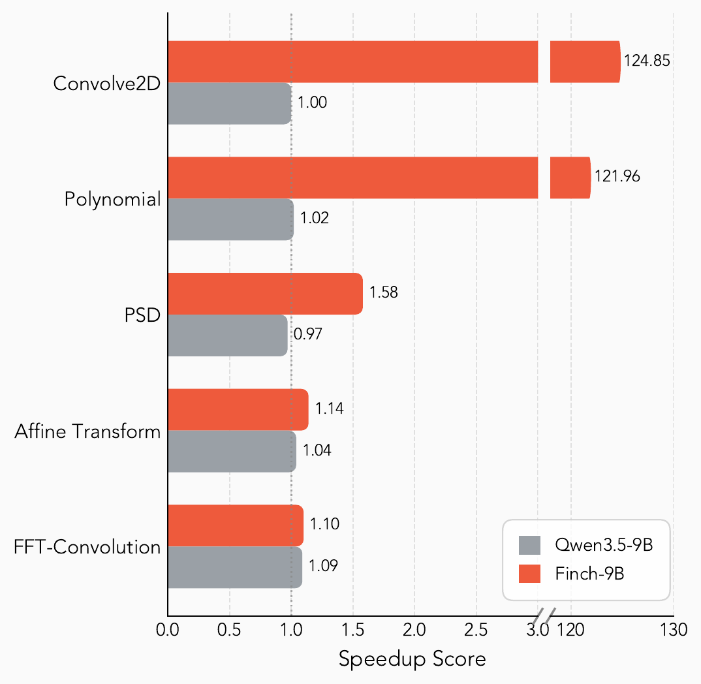
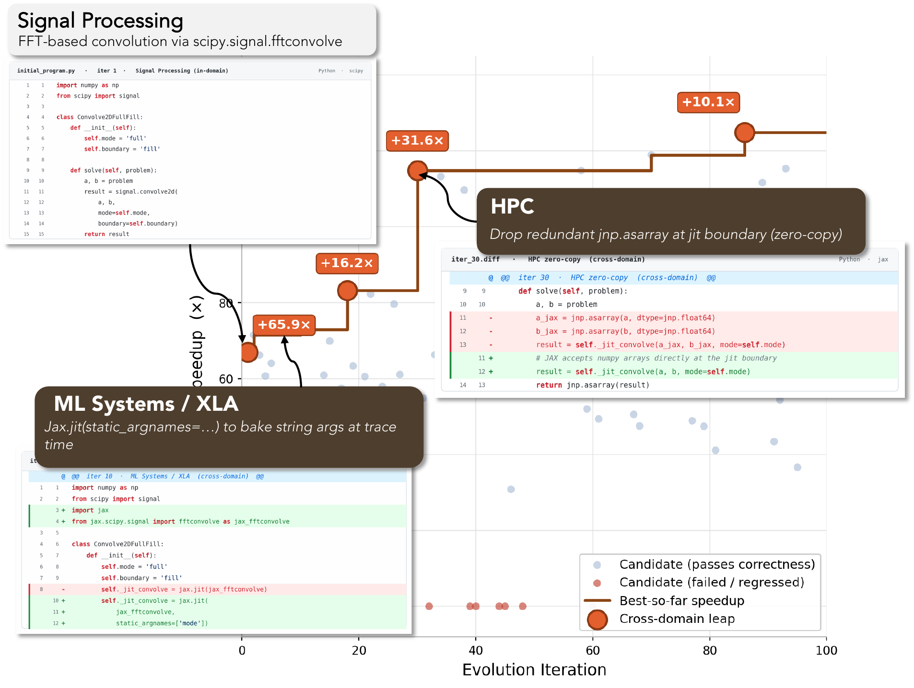

A mid-training “practice phase” that teaches small open‑source LLMs how to evolve solutions — internalizing discovery skill instead of rebuilding it inside every search.

LLMs integrated into evolutionary search have recently produced state-of-the-art solutions on optimization tasks — open mathematical conjectures, GPU kernel design, scientific-law discovery, and combinatorial puzzles. To achieve this, prior work applies a search scaffold to one target task at a time, so every new problem is approached from scratch and the experience accumulated during search is discarded once the model finishes. This leaves the capability of iteratively evolving a solution — knowing which part to mutate and how, deciding when to backtrack — entirely in the scaffold rather than in the model itself.
We introduce Evolution Fine-Tuning (EFT), a mid-training paradigm that teaches LLMs to evolve solutions across tasks by converting evolutionary search trajectories into supervision. We construct the Finch Collection, a 156K-trajectory dataset spanning 10 domains and 371 optimization tasks, and fine-tune open-source LLMs from 2B to 9B parameters. Empirically, EFT confers cross-task generalization: across 22 held-out tasks, our models surpass their base counterparts by 10.22% on average. Furthermore, when paired with test-time RL, our model matches state-of-the-art performance on two circle-packing tasks and outperforms its base-model counterparts on the Erdős minimum-overlap problem. EFT thus serves as a “practice phase” for general-purpose discovery agents that doesn’t solve new problems from scratch.
Test-time search needs an expensive proprietary mutation operator; test-time learning over-fits a single task and throws the strategy away. EFT distills the discovery behavior itself into a small model — which then plugs into either scaffold.

Instead of rebuilding discovery skill from scratch inside every search run, EFT teaches the LLM how to mutate, what to keep, and when to backtrack — so it practices before deployment rather than solving each new problem from zero.
Optimization tasks are NP-hard and lack ground-truth optima, so (problem, answer) pairs are unavailable. EFT instead treats the trajectories of search runs — parent → child transitions with scores — as the training signal.
An EFT model can serve as a frozen mutation operator inside test-time search, or be further adapted by test-time RL. EFT is a layer beneath both branches, not a replacement for either.
Because it is trained across many domains at once, Finch composes strategies it learned elsewhere when tackling a new problem — behavior the base model never exhibits.
Optimization training data is hard to synthesize, so we source 371 seed tasks from 10 existing benchmarks — each requiring nontrivial search, with a deterministic continuous-score evaluator — and harvest the search itself.

371 tasks sourced from 10 benchmarks — chosen to require real search, not ground-truth matching, with deterministic scorers.
OpenEvolve with a Qwen3.5-397B-A17B teacher runs each task under diff-edit and full-rewrite strategies → 172,997 raw trajectories.
Remove systematic errors, hard-negative breakages, and overlong inputs (90.6% retained), then label each by score delta.


The collection is balanced across languages (68.5% Python / 31.5% C++) and strategies (50.3% diff-edit / 49.7% full-rewrite). We fine-tune the Qwen3.5 (2B/4B/9B) and Qwen3-8B bases via full SFT on improved trajectories from 355 tasks (16 held out), producing the Finch family.
Used as a mutation operator inside test-time search, Finch beats its base models across 22 held-out tasks — and lets small models rival non-EFT models twice their size.
Finch over same-size base models across 22 held-out tasks, with up to +290% on ahc058 and +74% on Transaction.
Finch-4B reaches 0.3865 on Erdős — comparable to Qwen3-8B’s 0.4036 (lower is better), matching a model twice as large.
Held-out performance rises steadily as the Finch Collection grows from 15 → 355 training tasks.


Training Finch on improved and regressed trajectories with preference learning further internalizes discovery: Finch-8B + KTO surpasses the best human score on both the AC1 and AC2 tasks.
With test-time RL (nanodiscover), Finch reaches state-of-the-art on two circle-packing tasks and improves the Erdős result by +3.2% — EFT strengthens what RL can reach.
Finch doesn’t just memorize in-domain tricks. To crack an NP-hard competitive-programming problem, it imports strategies it learned elsewhere — behavior the base model never shows.
Levenberg–Marquardt multi-start polish.
Log-domain Alternating Least Squares, degree-weighted updates.
M-estimator + RANSAC drop-resistant fitting.
Knapsack-style outlier rejection budget.

If you find Evolution Fine-Tuning or the Finch Collection useful, please cite our work. (arXiv id is added once the preprint is posted.)
@misc{lee2026evolution,
title = {Evolution Fine-Tuning: Learning to Discover Across 371 Optimization Tasks},
author = {Lee, Young-Jun and Kim, Seungone and Kang, Minki and Cheong, Alistair
and Chen, Zerui and Han, Seungho and Jung, Taehee and Kang, Dongyeop},
year = {2026},
eprint = {ARXIV_ID_PLACEHOLDER},
archivePrefix = {arXiv},
primaryClass = {cs.LG},
url = {https://arxiv.org/abs/ARXIV_ID_PLACEHOLDER}
}